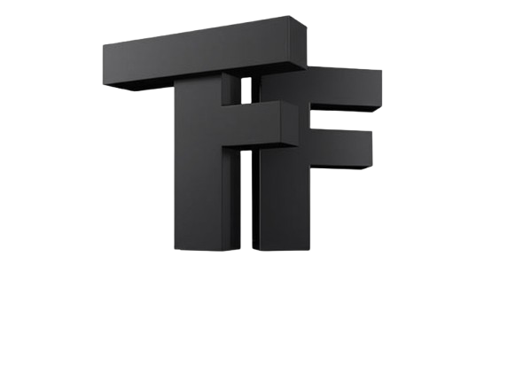

FlexiTransformers Documentation
A modular Transformer framework supporting multiple architectures and attention mechanisms.
graph TD
A[FlexiTransformers] --> B[Architectures]
A --> C[Components]
A --> D[Training]
B --> B1[Encoder-Decoder]
B --> B2[Encoder-Only]
B --> B3[Decoder-Only]
C --> C1[Attention Mechanisms]
C --> C2[Positional Embeddings]
C --> C3[Layer Implementations]
C1 --> C1a[Absolute]
C1 --> C1b[Rotary/RoPE]
C1 --> C1c[ALiBi]
C1 --> C1d[Relative Global]
D --> D1[Trainer Class]
D --> D2[Callbacks]
D --> D3[Loss Functions]
Features
Multi-Architecture Support: Build Encoder-Decoder, Encoder-only (BERT), or Decoder-only (GPT) models
Modular Components: Swap attention mechanisms, positional embeddings, and feed-forward layers
Production-Ready: Type hints, comprehensive docs, and CI/CD tested
Training Utilities: Built-in trainer with progress monitoring and callback system
10+ Attention Variants: Includes Absolute, Rotary (RoPE), ALiBi, and Relative Global Attention
Installation
pip install flexitransformers
Quick Start
Encoder-Decoder Model
from flexit.models import TransformerModel
model = TransformerModel(
'src_vocab': 1000,
'tgt_vocab': 1000,
'd_model': 768,
'n_heads': 12,
'n_layers': 6,
'pe_type': 'absolute',
'init_method': 'xavier_uniform',
'pre_norm': True,
)
BERT-Style Model
from flexit.models import FlexiBERT
bert_model = FlexiBERT(
src_vocab=32000,
num_classes=2,
d_model=768,
pe_type='alibi'
)
GPT-Style Model
from flexit.models import FlexiGPT
gpt_model = FlexiGPT(
tgt_vocab=50000,
d_model=1024,
pe_type='rotary'
)
flowchart LR
A[Configuration] --> B[TransformerFactory]
B --> C{Architecture}
C -->|Encoder-Decoder| D[EncoderDecoderArchitectures]
C -->|Encoder-Only| E[EncoderOnlyArchitectures]
C -->|Decoder-Only| F[DecoderOnlArchitectures]
D -->|Dedicated Class| G[FlexiTransformer]
D -->|Generic Class| H[TransformerModel]
E -->|Dedicated Class| I[FlexiBERT]
E -->|Generic Class| J[FlexiTransformer]
F -->|Dedicated Class| K[FlexiGPT]
F -->|Generic Class| L[FlexiTransformer]
G --> M[Model Instance]
H --> M
I --> M
J --> M
K --> M
L --> M
Core Architecture
Three Fundamental Components:
Embedding System - Token embeddings + Positional Encoding - Supports Absolute, Rotary (RoPE), and ALiBi encoding
Transformer Layers - Configurable encoder/decoder stacks - Layer normalization variants (pre-norm/post-norm)
Task Heads - Sequence generation (Encoder-Decoder) - Classification (Encoder-only) - Autoregressive generation (Decoder-only)
stateDiagram-v2
[*] --> InputEmbedding
InputEmbedding --> PositionalEncoding
PositionalEncoding --> TransformerLayers
state TransformerLayers {
[*] --> EncoderStack
EncoderStack --> [*]: Encoder-Only
EncoderStack --> DecoderStack: Encoder-Decoder
[*] --> DecoderStack: Decoder-Only
DecoderStack --> [*]
}
TransformerLayers --> TaskHead
TaskHead --> [*]
Training Pipeline
Example Training Loop:
from flexit.train import Trainer, Batch
from flexit.loss import LossCompute
from flexit.callbacks import CheckpointCallback, EarlyStoppingCallback
# Initialize components
trainer = Trainer(
model=model,
optimizer=torch.optim.Adam(model.parameters(), lr=0.001),
loss_fn=LossCompute(model.generator, torch.nn.CrossEntropyLoss()),
train_dataloader=train_loader,
val_dataloader=val_loader,
callbacks=[CheckpointCallback(), EarlyStoppingCallback()]
)
# Run training
metrics = trainer.fit(epochs=10)
Customization Guide
Configuration-Driven Models
from flexit.configs import ModelConfig config = ModelConfig( d_model=768, n_heads=12, pe_type='relative', ff_activation='gelu' )
Custom Attention Layer
from flexit.attention import AbstractAttention class LocalWindowAttention(AbstractAttention): def forward(self, query, key, value, mask=None): # Implement windowed attention return attention_output
Custom Positional Encoding
from flexit.pos_embeddings import AbsolutePositionalEncoding class LearnedPositionalEncoding(AbsolutePositionalEncoding): def __init__(self, d_model, max_len=5000): super().__init__(d_model, max_len) self.pe = nn.Parameter(torch.zeros(1, max_len, d_model))
Modules Overview
Module |
Key Components |
|---|---|
attention.py |
Multi-head attention implementations |
configs.py |
Model configuration dataclasses |
factory.py |
Model creation from configurations |
pos_embeddings.py |
Positional encoding implementations |
train.py |
Trainer class with metrics tracking |
callbacks.py |
Checkpointing, early stopping, custom callbacks |
classDiagram
TransformerFactory --> FlexiTransformer
TransformerFactory --> TransformerModel
TransformerFactory --> FlexiBERT
TransformerFactory --> FlexiGPT
class EncoderDecoder {
+Encoder encoder
+Decoder decoder
+Generator generator
+forward(src, tgt, src_mask, tgt_mask)
}
class Attention {
<<interface>>
+forward(query, key, value, mask)
}
class PositionalEncoding {
<<interface>>
+forward(x)
}
Attention <|-- AbsoluteMultiHeadedAttention
Attention <|-- RotaryMultiHeadAttention
Attention <|-- ALiBiMultiHeadAttention
Attention <|-- RelativeGlobalAttention
PositionalEncoding <|-- AbsolutePositionalEncoding
PositionalEncoding <|-- RotaryPositionalEncoding
PositionalEncoding <|-- ALiBiPositionalEncoding
API Reference
Package Modules
Contributing
Fork the repository
Create feature branch
Submit PR with tests and documentation
Follow PEP8 and type hinting guidelines
License
MIT License - See full license text
Acknowledgments
Original Transformer paper “Attention Is All You Need”
Hugging Face Transformers for architectural inspiration
PyTorch community for foundational components